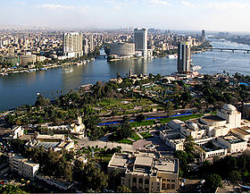

Kairo je najveći grad u Africi sa preko 18 miliona ljudi. Smešten je na obalama i ostrvima Nila u severnom Egiptu, malo južnije od mesta gde reka napušta svoju pustinjom oivičenu dolinu i gde se grana u tri rukavca započinjući deltu Nila. Poznat i kao “Majka svih gradova”.
Kairo predstavlja haotičnu mešavinu raznih predela, zvukova i mirisa. Zakrčene ulice pune su trgovaca, magarećih kočija, đžamija, užurbanih pešaka, coffee šopova u kojim se pijucka jaka kafa i puši vodena lula u pravom egipatskom stilu.
Stari Kairo, poznatiji kao Coptic Cairo, je najstariji deo grada poznat i kao rimska tvrđava Vavilona. Neki od starih zidina još uvek postoje. To je drevno srce hrišćanskog društva i posetioci su u mogućnosti da vide i crkvu u kojoj je boravio Isus Hrist s majkom Marijom nakon prognanstva iz Jerusalima. Takođe je impozantna i Sinagoga u kojoj navodno postoje tragovi boravka Mojsija.
To je miran deo grada za odmor uz laganu šetnju u odnosu na brz i moderan centar. Crkva koja je interesantna za turiste je i Al-Muallaqa, izgrađena od belog alabastera, i jedna od najstrijih hrišćanskih u gradu.
U južnom predgrađu glavnog grada Egipta, nalazi se Giza, a u Gizi čuvene egipatske piramide: Keopsova, Kefrenova i Mikerinova. Apsolutno je nemoguće ne obići ih ako već imate priiku da boravite u Africi.
Šta posetiti u Kairu?
Kairsku kulu. Nalazi se na ostrvu Gezira. Visoka je 186 metara i dominira celim krajem. Na njenom vrhu je fenomenalan vidikovac i restoran koji se obrne za ceo krug u roku od pola sata.
Zoološki vrt. Nalazi se u elitnoj, rezidencijalnoj gradskoj četvrti Doki. Zauzima mnogo veći prostor od Beogradskog zoološkog vrta. Tipičan je predstavnik tkzv. britanske škole. Poseduje vrlo impresivan broj životinjskih vrsta iz celog sveta.
Palatu "Al Ahram". Nalazi se na desnoj obali Nila u kvartu Garden city. Na vrhu je fantastičan vidikovac. Ulaz se naplaćuje.
Muzej moderne umetnosti. Lokacija: leva obala Nila u Doki. Teško je rečima dati komentar, treba otići i videti.
Muzej islamske umetnosti. Poznavaoci kažu da je jedan od najimpresivnijih kulturnih spomenika te vrste u svetu. Nalazi se u kvartu El Muski na desnoj obali Nila.
Koptsku četvrt. Ako niste znali, tu su u jednoj od crkava smeštene mošti Sv. Kozme i Damjana - poznatijih u našem narodu kao "vrači". Treba je obavezno posetiti. U okviru nje se nalazi i Koptski muzej. Posete su dozvoljene do 17.00 h (lokaliteti se inače u zimskom periodu zatvaraju u to vreme).
Poljoprivredni muzej. Muzej poseduje veoma interesantnu postavku oruđa i alata od praistorije do danas. Ova ustanova je nepravedno zapostavljena. Vrlo malo stranaca je čulo za nju a još manje je poseti. Nalazi se u četvrti El Agouza na levoj obali Nila.
Grobnice i mauzoleje velikog broja kalifa, sultana i drugih zaslužnih ličnosti. Grad je prepun ovakvih nekropola. Detaljnije informacije o njima možete dobiti u gradskom turistickom informativnom centru u ulici Adly.
Obavezno prošetati ostrvima "Gezira" i "Roda".
Ako Vam preostane slobodnog vremena posetite neki od šoping centara u delux hotelima kao što je "Four seasons". Iznenadićete se bogatstvom ponude firmirane robe a cene su niže nego kod nas.